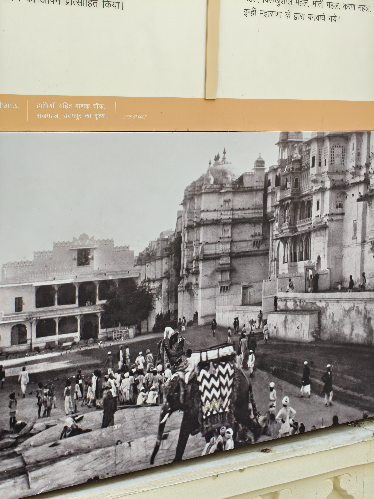
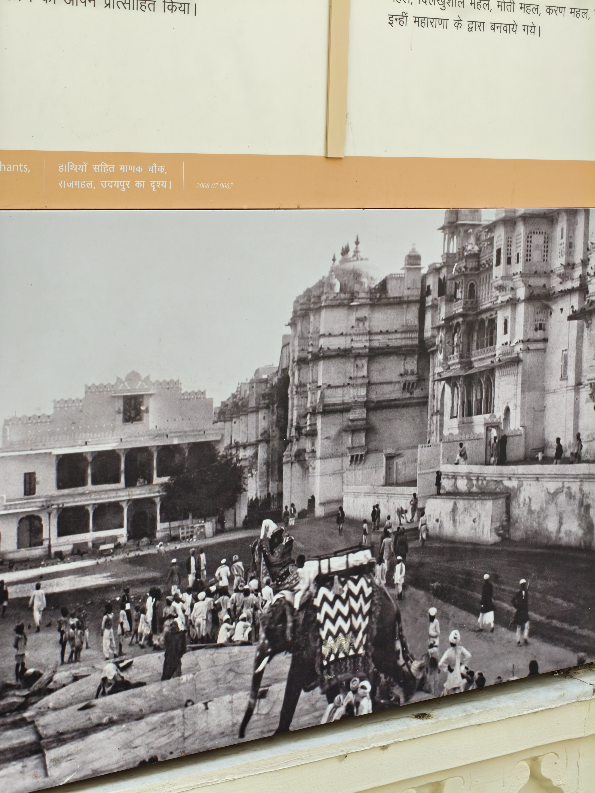

i was lucky enough to get invited on a guided tour of Udaipur by my new friends
we payed tribute to the God of Luck and made a wish


the palace was made to look enormous by being built on a hill
the right side is not actually a building, it is just plaster on a hillside
at the top is a garden


 



the inside was full of intricate detailing and bright colours
built up of archways and tiny staircases